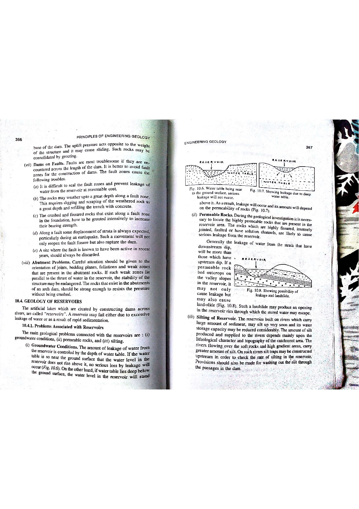

Q128: Deep Mixing Methods (DMM): Advanced In-Situ Ground Stabilization and Grouting Technology
Deep Mixing Methods (DMM)—also known internationally as Deep Soil Mixing (DSM) or In-Situ Soil Stabilization—represent an advanced ground modification technology in which cementitious binders (slurry or dry powder of Portland cement, lime, blast furnace slag, or fly ash) are mechanically blended in-situ with natural soft, compressible, or liquefiable soils at depth using single or multi-axis rotating hollow-stem augers equipped with radial mixing blades and cutting heads (FHWA, 2013; Bruce et al., 2000; Bangar, p. 190).

Comprehensive Multifunctional Applications in Civil Infrastructure
As framed in the official examination question, DMM has gained universal global acceptance across modern geotechnical and civil infrastructure engineering because it uniquely achieves multiple simultaneous ground enhancement functions:
- Strength & Bearing Capacity Enhancement: Transforms extremely soft clays, organic silts, and loose peats into high-strength, semi-rigid "soil-cement" columns with unconfined compressive strengths ($q_u$) ranging from $0.5\text{ to } 5.0\text{ MPa}$ ($10\text{ to } 50\times$ higher than parent soil).
- Deformation & Settlement Control: Significantly reduces both total and differential consolidation settlements under heavy highway and railway embankments by carrying up to $70\text{--}90\%$ of superincumbent embankment loads directly onto the stiffer soil-cement columns.
- Permeability Reduction & Hydraulic Cut-Offs: Lowers the hydraulic conductivity ($k$) of permeable alluvial sand/silt layers by 2 to 4 orders of magnitude ($k \approx 10^{-8} \text{ to } 10^{-9}\text{ m/s}$), providing impermeable groundwater seepage barriers and excavation retention cofferdams.
- Embankment Slope Stability: Overlapping shear wall panels installed beneath slope toes prevent deep-seated rotational and translation shear failures.
- Seismic Liquefaction Mitigation: Solidified cellular lattice grids encapsulate loose saturated sands, restraining shear strain deformation and preventing excess pore-water pressure buildup ($\Delta u$) during earthquake shaking.
- Vibration Attenuation: Soil-cement walls installed alongside high-speed railroad corridors, highways, and bridge abutments act as dynamic seismic wave barriers that reflect and dissipate Rayleigh surface waves and traffic-induced vibrations.

Two Primary Technological Variants
| Characteristic | Wet Mixing Method (WMM / Slurry Method) | Dry Mixing Method (DMM / Dry Jet Mixing) |
|---|---|---|
| Binder Delivery State | Aqueous fluid slurry of cement and water (water-binder ratio $w/b \approx 0.8 - 1.2$). | Dry unhydrated powder (cement, quicklime, or lime-cement blend) delivered via compressed air. |
| Soil Compatibility | Optimal for sands, silts, low-moisture clays, and unsaturated ground. | Exclusively applied in high-moisture soft soils ($w_{\text{soil}} > 60 - 150\%$) like marine clays, sensitive quick clays, and peat bogs. |
| Hydration Water Source | Supplied entirely by the injected slurry water. | Absorbs in-situ pore-water from the natural soil, desiccating and consolidating the surrounding ground. |
| Spoil Generation | Generates $10 - 30\%$ surface soil-grout spoil/slurry return due to fluid volume addition. | Virtually zero surface spoil; minimal cleanup and disposal costs. |
| Typical Strength ($q_u$) | $1.0 - 5.0\text{ MPa}$ (higher strengths, stiffer columns). | $0.3 - 1.5\text{ MPa}$ (ductile, flexible columns suitable for seismic dissipation). |
The geotechnical terminology distinguishing DMM from alternative grouting techniques is precise and codified (FHWA, 2013; Bangar, p. 190):
- Deep Mixing Methods (DMM): Mechanical blending of soil and binder in-place. Destroys original soil fabric to create an engineered composite matrix.
- Permeation Grouting: Injection of low-viscosity particulate or chemical grout into existing soil pores without altering the soil structure or causing displacement. Limited exclusively to clean gravels and medium-to-coarse sands; completely ineffective in clays or fine silts.
- Hydro-Fracture Grouting (Claustage): Injection at pressures deliberately exceeding the minimum principal stress ($\sigma_3$) to hydraulically fracture the ground, forming discrete interconnected lenses and sheets of grout.
- Compensation Grouting: High-pressure compaction or fracture grouting executed concurrently beneath foundations during deep shield tunneling to precisely counteract ground volume loss and eliminate building settlement in real time.
- (A) Permeation Grouting
- (B) Hydro Fracture Grouting
- (C) Deep Mixing Methods (DMM)
- (D) Compensation Grouting
Permeation grouting involves introducing low-viscosity liquid chemical grouts (silicates, acrylics, polyurethane) or microfine cement into granular soil pore voids without displacing or disturbing the soil matrix. It is physically limited to clean sands and gravels with permeability $k > 10^{-4}\text{ m/s}$. It cannot be used in soft cohesive clays, does not provide mass vibration dampening along railway alignments, and cannot remediate deep liquefaction zones cost-effectively over large infrastructure footprints.
Hydro-fracture grouting uses high pump pressure exceeding the minor in-situ normal stress to deliberately rupture and split the soil, forming irregular branching lenses and veins of grout. While it consolidates adjacent soil blocks by compaction, it creates an erratic, non-homogeneous network. It cannot produce uniform, predictable soil-cement columns or continuous cutoff walls, and is never used as a primary method for railway vibration reduction or liquefaction mitigation grids.
Deep Mixing Methods (DMM) is the precise, authoritative technology described verbatim in geotechnical engineering design literature (FHWA, 2013; Bruce et al., 2000; Bangar, p. 190). DMM utilizes mechanical rotating hollow-shaft augers to inject and homogenize cement/lime in-situ, creating continuous, overlapping column networks and solid grids. This multi-hazard method is internationally recognized for simultaneously solving: (1) strength and bearing capacity deficiency, (2) excessive consolidation settlement, (3) seepage permeability, (4) embankment slope instability, (5) earthquake liquefaction, and (6) high-speed rail/bridge vibrations.
Compensation grouting is a specialized technique where grout is injected through sleeved tube à manchettes (TAM) pipes directly beneath foundations during urban tunneling operations. Its sole purpose is to inject controlled volumes to "compensate" for ground loss in real-time, jacking sinking structures back to their original elevation. It is not a broad soil improvement method for general slope stability, liquefaction mitigation, or road/rail vibration attenuation.
| Technology | Primary Mechanism | Applicable Soil Types | Grout / Binder Material | Key Structural Output |
|---|---|---|---|---|
| Deep Mixing Methods (DMM) | In-situ mechanical shearing and blade blending | All soils (soft clays, silts, peats, loose sands) | Cement slurry (Wet) or dry cement/lime powder (Dry) | Homogeneous soil-cement columns, panels, cellular grids ($q_u = 0.5 - 5\text{ MPa}$). |
| Jet Grouting | High-velocity fluid cutting jets ($300 - 500\text{ bar}$) | All soil types, including gravels and cobbles | High-pressure cement grout, air, and water | Cast-in-place cemented columns, underpin slabs. |
| Permeation Grouting | Seepage filling of interstitial pores without displacement | Permeable sands and gravels ($k > 10^{-4}\text{ m/s}$) | Microfine cement, sodium silicate, acrylic resin | Solidified granular block; pores sealed against seepage. |
| Compaction Grouting | Injection of very low slump ($< 25\text{ mm}$) bulbous mortar | Loose sands, collapsible silts, cavernous karst | Thick soil-cement-sand mortar grout | Expanding bulb that densifies adjacent soil radially. |
| Compensation Grouting | Controlled fracture injection via TAM pipes | Urban soils overlying active tunnel excavations | Cement-bentonite fracture grout | Controlled ground heave counteracting tunnel settlement. |
A soft marine clay deposit is improved using Deep Mixing Method (DMM) columns of diameter $d = 1.0\text{ m}$ installed in a regular square grid pattern with center-to-center spacing $s = 2.0\text{ m}$. Calculate: (a) the tributary area ($A_{\text{trib}}$) of a single unit cell, (b) the cross-sectional area of a DMM column ($A_{\text{col}}$), and (c) the area replacement ratio ($a_s$).
1. Tributary area for a square grid: $$A_{\text{trib}} = s^2 = (2.0\text{ m})^2 = 4.0\text{ m}^2$$ 2. Cross-sectional area of column: $$A_{\text{col}} = \frac{\pi}{4} d^2 = \frac{\pi}{4} (1.0\text{ m})^2 = 0.7854\text{ m}^2$$ 3. Area replacement ratio $a_s$: $$a_s = \frac{A_{\text{col}}}{A_{\text{trib}}} = \frac{0.7854\text{ m}^2}{4.0\text{ m}^2} = 0.19635 = 19.64\%$$ Approximately $19.6\%$ of the ground footprint is replaced by solid soil-cement columns.
A highway embankment imposes an applied vertical stress $\Delta \sigma = 100\text{ kPa}$ on an improved DMM composite ground. The area replacement ratio is $a_s = 0.20$. Due to the stiffness disparity, the stress concentration ratio between the column and untreated soil is $n = \sigma_{\text{col}} / \sigma_{\text{soil}} = 10.0$. Calculate: (a) the stress acting on the soft soil ($\sigma_{\text{soil}}$), (b) the stress carried by the DMM column ($\sigma_{\text{col}}$), and (c) the settlement reduction factor ($\beta = S_{\text{improved}} / S_{\text{unimproved}}$).
1. Equilibrium of vertical stress across unit cell: $$\Delta \sigma = a_s \sigma_{\text{col}} + (1 - a_s) \sigma_{\text{soil}}$$ Since $\sigma_{\text{col}} = n \sigma_{\text{soil}}$: $$\Delta \sigma = \sigma_{\text{soil}} [a_s \cdot n + (1 - a_s)]$$ 2. Compute soil stress $\sigma_{\text{soil}}$: $$\sigma_{\text{soil}} = \frac{\Delta \sigma}{1 + a_s(n - 1)} = \frac{100\text{ kPa}}{1 + 0.20(10 - 1)} = \frac{100}{1 + 0.20(9)} = \frac{100}{2.8} = 35.71\text{ kPa}$$ 3. Compute column stress $\sigma_{\text{col}}$: $$\sigma_{\text{col}} = n \cdot \sigma_{\text{soil}} = 10.0 \times 35.71\text{ kPa} = 357.1\text{ kPa}$$ 4. Settlement reduction factor $\beta$: $$\beta = \frac{\sigma_{\text{soil}}}{\Delta \sigma} = \frac{35.71}{100} = 0.3571 \approx 35.7\%$$ Result: DMM columns reduce total consolidation settlement by $64.3\%$.
A dry jet mixing (DJM) column of diameter $d = 0.8\text{ m}$ and length $L = 12.0\text{ m}$ is installed in soft clay having a dry bulk density $\rho_d = 1.25\text{ tonnes/m}^3$. The design binder factor is $a_w = 12.0\%$ (cement powder mass per unit dry soil mass). Calculate: (a) total volume of the column, (b) total dry mass of soil in the column, and (c) total mass of cement powder required in tonnes.
1. Column volume $V$: $$V = \frac{\pi}{4} d^2 L = \frac{\pi}{4} (0.8\text{ m})^2 \times 12.0\text{ m} = 0.50265 \times 12.0 = 6.032\text{ m}^3$$ 2. Dry mass of soil $M_{\text{soil}}$: $$M_{\text{soil}} = V \times \rho_d = 6.032\text{ m}^3 \times 1.25\text{ tonnes/m}^3 = 7.54\text{ tonnes}$$ 3. Cement powder required: $$M_{\text{cement}} = a_w \times M_{\text{soil}} = 0.12 \times 7.54\text{ tonnes} = 0.9048\text{ tonnes} = 905\text{ kg}$$
A permeable alluvial sandy aquifer with natural hydraulic conductivity $k_{\text{sand}} = 2.5 \times 10^{-4}\text{ m/s}$ is treated with an overlapping DMM cutoff wall having a hydraulic conductivity of $k_{\text{DMM}} = 5.0 \times 10^{-8}\text{ m/s}$. The wall has thickness $T = 0.8\text{ m}$ and retains a hydraulic head differential of $\Delta h = 6.0\text{ m}$. Calculate: (a) the seepage velocity ($v$) through the cutoff wall using Darcy's Law, and (b) the order of magnitude reduction in hydraulic conductivity.
1. Hydraulic gradient across the wall: $$i = \frac{\Delta h}{T} = \frac{6.0\text{ m}}{0.8\text{ m}} = 7.5$$ 2. Seepage discharge velocity $v = k_{\text{DMM}} \cdot i$: $$v = (5.0 \times 10^{-8}\text{ m/s}) \times 7.5 = 3.75 \times 10^{-7}\text{ m/s} = 0.0324\text{ m/day}$$ 3. Ratio of hydraulic conductivities: $$\frac{k_{\text{sand}}}{k_{\text{DMM}}} = \frac{2.5 \times 10^{-4}}{5.0 \times 10^{-8}} = 5000$$ The DMM cutoff wall reduces water permeability by a factor of $5,000$ (a 3.7-order-of-magnitude reduction).
In an earthquake zone, a loose saturated sand layer suffers cyclic shear strains $\gamma_{\text{cyc}} = 1.2\%$ under design earthquake shaking ($\text{PGA} = 0.35g$), triggering liquefaction (threshold strain $\gamma_t = 0.01\%$). Installing a continuous cellular grid of DMM walls with area replacement ratio $a_s = 0.25$ and shear modulus ratio $G_{\text{DMM}} / G_{\text{sand}} = 30$ reduces cyclic shear strain according to Baez and Martin's shear strain reduction equation: $$\frac{\gamma_{\text{grid}}}{\gamma_{\text{free-field}}} = \frac{1}{1 + a_s \left(\frac{G_{\text{DMM}}}{G_{\text{sand}}} - 1\right)}$$ Calculate the reduced cyclic shear strain ($\gamma_{\text{grid}}$) and assess whether liquefaction is prevented.
1. Compute the strain reduction ratio: $$\text{Denominator} = 1 + 0.25 (30 - 1) = 1 + 0.25(29) = 1 + 7.25 = 8.25$$ $$\frac{\gamma_{\text{grid}}}{\gamma_{\text{free-field}}} = \frac{1}{8.25} \approx 0.1212$$ 2. Compute reduced cyclic shear strain: $$\gamma_{\text{grid}} = 0.1212 \times 1.2\% = 0.145\%$$ Conclusion: Shear strain is suppressed by $87.9\%$, preventing high excess pore pressure generation and eliminating catastrophic ground liquefaction.
A bridge abutment foundation rests on DMM improved ground with an area replacement ratio $a_s = 0.22$. The design unconfined compressive strength of the DMM column is $q_{u(\text{col})} = 1800\text{ kPa}$, and the ultimate bearing capacity of the untreated surrounding clay is $q_{\text{ult(soil)}} = 120\text{ kPa}$. Using the FHWA composite bearing capacity formula: $$q_{\text{ult(comp)}} = a_s \left(0.5 q_{u(\text{col})}\right) + (1 - a_s) q_{\text{ult(soil)}}$$ Calculate the composite ultimate bearing capacity and determine the allowable bearing pressure with $\text{FoS} = 2.5$.
1. Calculate composite ultimate bearing capacity: $$q_{\text{ult(comp)}} = 0.22 \times (0.5 \times 1800\text{ kPa}) + (1 - 0.22) \times 120\text{ kPa}$$ $$q_{\text{ult(comp)}} = 0.22 \times 900 + 0.78 \times 120 = 198.0 + 93.6 = 291.6\text{ kPa}$$ 2. Calculate allowable bearing pressure $q_{\text{allow}}$: $$q_{\text{allow}} = \frac{q_{\text{ult(comp)}}}{\text{FoS}} = \frac{291.6\text{ kPa}}{2.5} = 116.64\text{ kPa}$$ (Compared to only $48\text{ kPa}$ allowable for untreated soft ground).
A wet mixing rig installs a column of diameter $d = 1.0\text{ m}$ at an auger withdrawal rate of $v_{\text{lift}} = 0.8\text{ m/min}$. The design requires a slurry injection volume of $V_{\text{slurry}} = 0.25\text{ m}^3$ per cubic meter of treated soil. Calculate the required pump delivery flow rate ($Q_{\text{pump}}$) in liters per minute ($\text{L/min}$).
1. Volume of soil treated per unit time: $$A_{\text{col}} = \frac{\pi}{4} (1.0)^2 = 0.7854\text{ m}^2$$ $$\text{Soil volume rate } = A_{\text{col}} \times v_{\text{lift}} = 0.7854\text{ m}^2 \times 0.8\text{ m/min} = 0.6283\text{ m}^3/\text{min}$$ 2. Required grout slurry delivery rate $Q_{\text{pump}}$: $$Q_{\text{pump}} = 0.6283\text{ m}^3/\text{min} \times 0.25\text{ m}^3\text{ slurry/m}^3\text{ soil} = 0.1571\text{ m}^3/\text{min}$$ $$Q_{\text{pump}} = 0.1571 \times 1000\text{ L/min} \approx 157.1\text{ L/min}$$
A high-speed train traveling at $v_{\text{train}} = 280\text{ km/h}$ ($77.8\text{ m/s}$) on soft peat ground generates high-amplitude Rayleigh ground vibrations. The shear wave velocity of the soft peat is $V_{s1} = 90\text{ m/s}$, and its Rayleigh wave wavelength is $\lambda_R \approx 10.0\text{ m}$. A continuous vertical DMM curtain wall is installed along the track. According to Woods (1968) vibration barrier design criteria, the barrier depth $H$ must satisfy $H \ge 1.33 \lambda_R$ and width $W \ge 0.10 \lambda_R$ for effective wave reflection ($> 75\%$ amplitude reduction). Calculate the required minimum depth and thickness of the DMM vibration barrier.
1. Minimum barrier depth $H$: $$H \ge 1.33 \times \lambda_R = 1.33 \times 10.0\text{ m} = 13.3\text{ m}$$ 2. Minimum barrier thickness $W$: $$W \ge 0.10 \times \lambda_R = 0.10 \times 10.0\text{ m} = 1.0\text{ m}$$ Geotechnical Result: A $1.0\text{ m}$ thick, $13.5\text{ m}$ deep DMM wall creates an acoustic impedance mismatch that reflects high-energy surface waves back, safeguarding nearby structures from vibration distress.